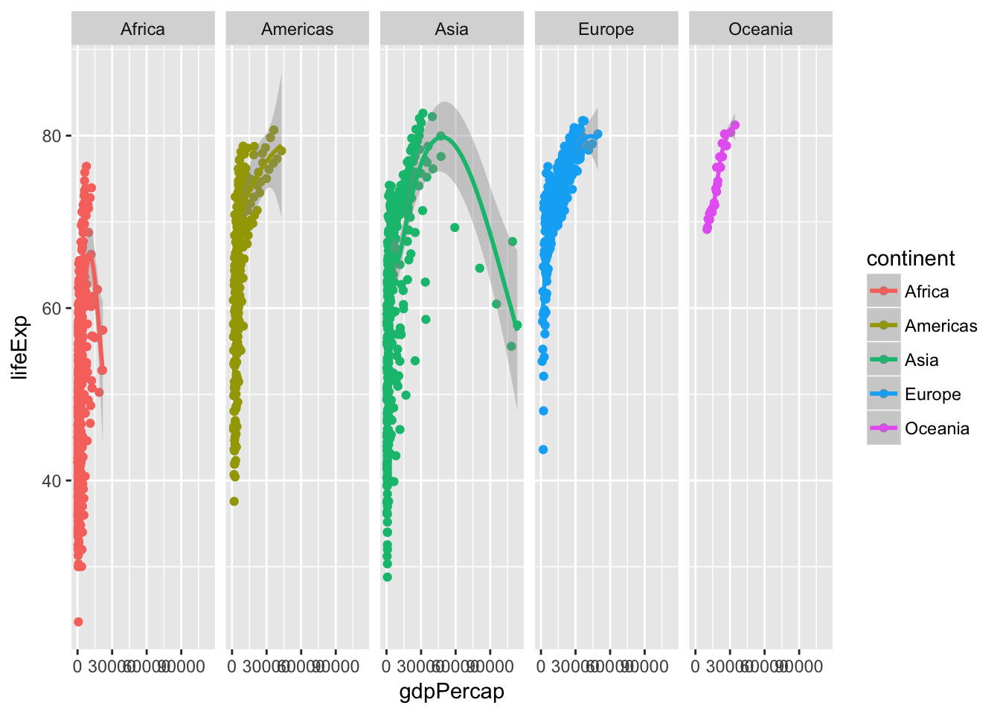
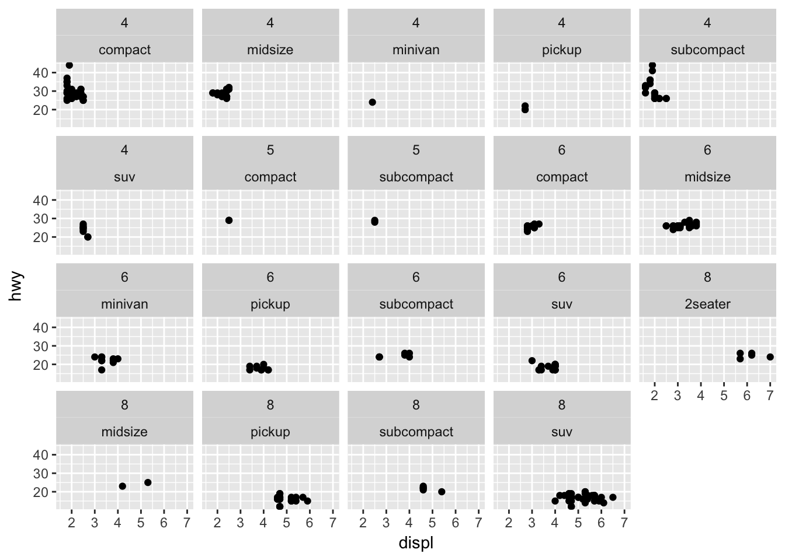

Practice generating layered graphics using ggplot2
library(tidyverse)Given your preparation for today’s class, now let’s practice generating layered graphics in R using data from Gapminder World, which compiles country-level data on quality-of-life measures.
Load the gapminder dataset
If you have not already installed the gapminder package and you try to load it using the following code, you will get an error:
library(gapminder)Error in library(gapminder) : there is no package called ‘gapminder’If this happens, install the gapminder package by running install.packages("gapminder") in your console.
Once you’ve done this, run the following code to load the gapminder dataset, the ggplot2 library, and a helper library for printing the contents of gapminder:
library(gapminder)
library(ggplot2)
library(tibble)
glimpse(gapminder)## Observations: 1,704
## Variables: 6
## $ country <fct> Afghanistan, Afghanistan, Afghanistan, Afghanistan, ...
## $ continent <fct> Asia, Asia, Asia, Asia, Asia, Asia, Asia, Asia, Asia...
## $ year <int> 1952, 1957, 1962, 1967, 1972, 1977, 1982, 1987, 1992...
## $ lifeExp <dbl> 28.8, 30.3, 32.0, 34.0, 36.1, 38.4, 39.9, 40.8, 41.7...
## $ pop <int> 8425333, 9240934, 10267083, 11537966, 13079460, 1488...
## $ gdpPercap <dbl> 779, 821, 853, 836, 740, 786, 978, 852, 649, 635, 72...Run
?gapminderin the console to open the help file for the data and definitions for each of the columns.
Using the grammar of graphics and your knowledge of the ggplot2 library, generate a series of graphs that explore the relationships between specific variables.
Exercises
Generate a histogram of life expectancy
Click for the solution
ggplot(data = gapminder, mapping = aes(x = lifeExp)) +
geom_histogram()## `stat_bin()` using `bins = 30`. Pick better value with `binwidth`.
Generate separate histograms of life expectancy for each continent
Hint: think about how to split your plots to show different subsets of data.
Click for the solution
ggplot(data = gapminder, mapping = aes(x = lifeExp)) +
geom_histogram() +
facet_wrap(~ continent)## `stat_bin()` using `bins = 30`. Pick better value with `binwidth`.
Compare the distribution of life expectancy, by continent by generating a boxplot
Click for the solution
ggplot(data = gapminder, mapping = aes(x = continent, y = lifeExp)) +
geom_boxplot()
Redraw the plot, but this time use a violin plot
Click for the solution
ggplot(data = gapminder, mapping = aes(x = continent, y = lifeExp)) +
geom_violin()
Generate a scatterplot of the relationship between per capita GDP and life expectancy
Click for the solution
ggplot(data = gapminder, mapping = aes(x = gdpPercap, y = lifeExp)) +
geom_point()
Add a smoothing line to the scatterplot
Click for the solution
ggplot(data = gapminder, mapping = aes(x = gdpPercap, y = lifeExp)) +
geom_point() +
geom_smooth()## `geom_smooth()` using method = 'gam'
Identify whether this relationship differs by continent
Use the color aesthetic to identify differences
Click for the solution
ggplot(data = gapminder,
mapping = aes(x = gdpPercap, y = lifeExp, color = continent)) +
geom_point() +
geom_smooth()## `geom_smooth()` using method = 'loess' and formula 'y ~ x'
Use faceting to identify differences
Click for the solution
# using facet_wrap()
ggplot(data = gapminder,
mapping = aes(x = gdpPercap, y = lifeExp, color = continent)) +
geom_point() +
geom_smooth() +
facet_wrap(~ continent)## `geom_smooth()` using method = 'loess' and formula 'y ~ x'
# using facet_grid()
ggplot(data = gapminder,mapping = aes(x = gdpPercap, y = lifeExp, color = continent)) +
geom_point() +
geom_smooth() +
facet_grid(. ~ continent)## `geom_smooth()` using method = 'loess' and formula 'y ~ x'
Why use facet_grid() here instead of facet_wrap()? Good question! Let’s reframe it and instead ask, what is the difference between facet_grid() and facet_wrap()?1
The answer below refers to the case when you have 2 arguments in facet_grid() or facet_wrap(). facet_grid(x ~ y) will display \(x \times y\) plots even if some plots are empty. For example:
ggplot(mpg, aes(displ, hwy)) +
geom_point() +
facet_grid(cyl ~ class)
There are 4 distinct cyl and 7 distinct class values. This plot displays \(4 \times 7 = 28\) plots, even if some are empty (because some classes do not have corresponding cylinder values, like rows with class = "midsize" doesn’t have any corresponding cyl = 5 value ).
facet_wrap(x ~ y) displays only the plots having actual values.
ggplot(mpg, aes(displ, hwy)) +
geom_point() +
facet_wrap(~ cyl + class)
There are 19 plots displayed now, one for every combination ofcyl and class. So for this exercise, I would use facet_wrap() because we are faceting on a single variable. If we faceted on multiple variables, facet_grid() may be more appropriate.
Bonus: Identify the outlying countries on the right-side of the graph by labeling each observation with the country name
Click for the solution
ggplot(data = gapminder,
mapping = aes(x = gdpPercap, y = lifeExp, label = country)) +
geom_smooth() +
geom_text()## `geom_smooth()` using method = 'gam' and formula 'y ~ s(x, bs = "cs")'
Session Info
devtools::session_info()## Session info -------------------------------------------------------------## setting value
## version R version 3.5.1 (2018-07-02)
## system x86_64, darwin15.6.0
## ui X11
## language (EN)
## collate en_US.UTF-8
## tz America/Chicago
## date 2018-10-03## Packages -----------------------------------------------------------------## package * version date source
## assertthat 0.2.0 2017-04-11 CRAN (R 3.5.0)
## backports 1.1.2 2017-12-13 CRAN (R 3.5.0)
## base * 3.5.1 2018-07-05 local
## bindr 0.1.1 2018-03-13 CRAN (R 3.5.0)
## bindrcpp 0.2.2 2018-03-29 CRAN (R 3.5.0)
## broom 0.5.0 2018-07-17 CRAN (R 3.5.0)
## cellranger 1.1.0 2016-07-27 CRAN (R 3.5.0)
## cli 1.0.0 2017-11-05 CRAN (R 3.5.0)
## codetools 0.2-15 2016-10-05 CRAN (R 3.5.1)
## colorspace 1.3-2 2016-12-14 CRAN (R 3.5.0)
## compiler 3.5.1 2018-07-05 local
## crayon 1.3.4 2017-09-16 CRAN (R 3.5.0)
## datasets * 3.5.1 2018-07-05 local
## devtools 1.13.6 2018-06-27 CRAN (R 3.5.0)
## digest 0.6.15 2018-01-28 CRAN (R 3.5.0)
## dplyr * 0.7.6 2018-06-29 cran (@0.7.6)
## evaluate 0.11 2018-07-17 CRAN (R 3.5.0)
## forcats * 0.3.0 2018-02-19 CRAN (R 3.5.0)
## gapminder * 0.3.0 2017-10-31 CRAN (R 3.5.0)
## ggplot2 * 3.0.0 2018-07-03 CRAN (R 3.5.0)
## glue 1.3.0 2018-07-17 CRAN (R 3.5.0)
## graphics * 3.5.1 2018-07-05 local
## grDevices * 3.5.1 2018-07-05 local
## grid 3.5.1 2018-07-05 local
## gtable 0.2.0 2016-02-26 CRAN (R 3.5.0)
## haven 1.1.2 2018-06-27 CRAN (R 3.5.0)
## hms 0.4.2 2018-03-10 CRAN (R 3.5.0)
## htmltools 0.3.6 2017-04-28 CRAN (R 3.5.0)
## httr 1.3.1 2017-08-20 CRAN (R 3.5.0)
## jsonlite 1.5 2017-06-01 CRAN (R 3.5.0)
## knitr 1.20 2018-02-20 CRAN (R 3.5.0)
## labeling 0.3 2014-08-23 CRAN (R 3.5.0)
## lattice 0.20-35 2017-03-25 CRAN (R 3.5.1)
## lazyeval 0.2.1 2017-10-29 CRAN (R 3.5.0)
## lubridate 1.7.4 2018-04-11 CRAN (R 3.5.0)
## magrittr 1.5 2014-11-22 CRAN (R 3.5.0)
## Matrix 1.2-14 2018-04-13 CRAN (R 3.5.1)
## memoise 1.1.0 2017-04-21 CRAN (R 3.5.0)
## methods * 3.5.1 2018-07-05 local
## mgcv 1.8-24 2018-06-23 CRAN (R 3.5.1)
## modelr 0.1.2 2018-05-11 CRAN (R 3.5.0)
## munsell 0.5.0 2018-06-12 CRAN (R 3.5.0)
## nlme 3.1-137 2018-04-07 CRAN (R 3.5.1)
## pillar 1.3.0 2018-07-14 CRAN (R 3.5.0)
## pkgconfig 2.0.2 2018-08-16 CRAN (R 3.5.1)
## plyr 1.8.4 2016-06-08 CRAN (R 3.5.0)
## purrr * 0.2.5 2018-05-29 CRAN (R 3.5.0)
## R6 2.2.2 2017-06-17 CRAN (R 3.5.0)
## Rcpp 0.12.18 2018-07-23 CRAN (R 3.5.0)
## readr * 1.1.1 2017-05-16 CRAN (R 3.5.0)
## readxl 1.1.0 2018-04-20 CRAN (R 3.5.0)
## reshape2 1.4.3 2017-12-11 CRAN (R 3.5.0)
## rlang 0.2.1 2018-05-30 CRAN (R 3.5.0)
## rmarkdown 1.10 2018-06-11 CRAN (R 3.5.0)
## rprojroot 1.3-2 2018-01-03 CRAN (R 3.5.0)
## rstudioapi 0.7 2017-09-07 CRAN (R 3.5.0)
## rvest 0.3.2 2016-06-17 CRAN (R 3.5.0)
## scales 1.0.0 2018-08-09 CRAN (R 3.5.0)
## stats * 3.5.1 2018-07-05 local
## stringi 1.2.4 2018-07-20 CRAN (R 3.5.0)
## stringr * 1.3.1 2018-05-10 CRAN (R 3.5.0)
## tibble * 1.4.2 2018-01-22 CRAN (R 3.5.0)
## tidyr * 0.8.1 2018-05-18 CRAN (R 3.5.0)
## tidyselect 0.2.4 2018-02-26 CRAN (R 3.5.0)
## tidyverse * 1.2.1 2017-11-14 CRAN (R 3.5.0)
## tools 3.5.1 2018-07-05 local
## utils * 3.5.1 2018-07-05 local
## withr 2.1.2 2018-03-15 CRAN (R 3.5.0)
## xml2 1.2.0 2018-01-24 CRAN (R 3.5.0)
## yaml 2.2.0 2018-07-25 CRAN (R 3.5.0)Example drawn from this StackOverflow thread.↩
This work is licensed under the CC BY-NC 4.0 Creative Commons License.